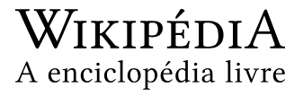
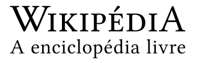

Teste de Inglês como uma Língua Estrangeira
O Test of English as a Foreign Language (TOEFL) ou Teste de Inglês como Língua Estrangeira é um exame que tem o objetivo de avaliar o potencial individual de falar e entender o inglês em nível acadêmico. É requerido para a maior parte dos estudantes estrangeiros que tentam ingressar em uma universidade de um país em que inglês é a primeira língua. Além disso, instituições como agências governamentais, empresas e programas de estudo podem exigir o teste. A nota no TOEFL é válida por apenas dois anos - após esse prazo, ela é eliminada do banco de dados.
O TOEFL é uma marca registrada da Educational Testing Service (Serviço de Testes Educacionais; ETS). O primeiro teste foi realizado em 1964 e, desde então, aproximadamente 20 milhões de estudantes já o fizeram.
Mais de 2.400 faculdades e universidades nos Estados Unidos e no Canadá exigem o TOEFL como requisito de admissão em seus cursos. Órgãos governamentais e programas de bolsa de estudos também o utilizam para avaliar a proficiência em inglês.
Atualmente, o TOEFL IBT (Internet Based Test) é mais difundido, embora ainda se aplique o Paper Based Test.
Teste baseado na Internet
Desde sua introdução no final de 2005, o Internet-Based Test (iBT) tem progressivamente substituído tanto o Computer-based Test (CBT) quanto o Paper-Based Test (PBT), as duas outras modalidades do exame. O iBT foi introduzido em fases, começando pelos Estados Unidos, Canadá, França, Alemanha e Itália em 2005 e se estendendo para o resto do mundo em 2006.
Apesar da demanda pelos testes ser muito alta, os candidatos costumavam esperar meses para conseguir fazer o TOEFL. No entanto, agora é possível fazer o teste dentro de uma a quatro semanas na maior parte dos países. O teste dura quatro horas e consiste em quatro seções, cada uma mensurando principalmente uma das quatro habilidades linguísticas básicas (embora alguns testes requeiram várias habilidades), focando a linguagem usada no ambiente acadêmico. É permitido tomar notas durante o exame.
Seções
A seção de leitura consiste de 3 a 5 passagens longas e questões sobre essas passagens, relativas a assuntos acadêmicos (o tipo de material que pode-se encontrar em livros para estudantes de graduação). Os estudantes respondem questões sobre as ideias principais, detalhes, inferências, reformulação de sentenças, inserção de sentenças, vocabulário, funções e ideias gerais. Os principais tipos de questões do iBT requerem parafrasear, preencher tabelas e completar resumos. Não é necessário conhecimento prévio sobre o assunto em discussão para encontrar a resposta correta, embora isso possa ajudar. Haverá cerca de 40 perguntas, principalmente de múltipla escolha.
Consiste de seis longas passagens e questões sobre essas passagens. As passagens consistem de dois diálogos entre estudantes e quatro leituras ou discussões acadêmicas. As questões pedem que o estudante determine as principais ideias, detalhes, funções, posicionamentos, inferências e organização geral.
Consiste de seis tarefas, duas independentes e quatro integradas. Nas duas tarefas independentes, os estudantes devem responder questões pessoais sobre algum aspecto da vida acadêmica. Nas duas tarefas integradas de leitura, compreensão e expressão oral, estudantes devem ler uma passagem, ouvir outra passagem e falar sobre como as ideias das duas se relacionam. Nas duas tarefas integradas de compreensão e expressão oral, estudantes devem ouvir passagens longas e resumir e oferecer opiniões sobre as informações passadas. Espera-se que o estudante expresse suas impressões, explique as ideias e defenda opiniões de forma clara, coerente e acurada.
A seção de expressão escrita consiste de duas tarefas, uma integrada e uma independente. Na tarefa integrada, estudantes devem ler uma passagem acadêmica, ouvir outra passagem e escrever sobre como as ideias das duas passagens se relacionam. Na tarefa independente, o estudante deve escrever um ensaio pessoal.
ETS
A ETS (Educational Testing Services) é a empresa que faz o TOEFL, TOEIC, GMAT. Fundada em 1947, a ETS desenvolve, administra e corrige cerca de 24 milhões de testes anualmente em mais de 180 países.
A ETS é a maior organização privada de testes e certificações educacionais do mundo. Como uma organização sem fins lucrativos, sua missão visa o avanço da qualidade e igualdade na educação propiciando avaliações justas e de reconhecimento internacional, pesquisa e serviços relacionados para as pessoas em todo o mundo. Seus produtos e serviços medem o conhecimento e as habilidades, promovem o aprendizado e a performance dos indivíduos e auxilia o desenvolvimento educacional e profissional do ser humano.
Links Relacionados
Referências
[...]
Ligações Externas
[...]